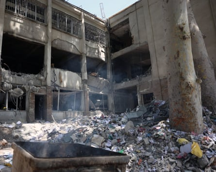
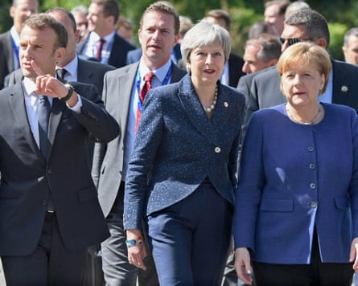
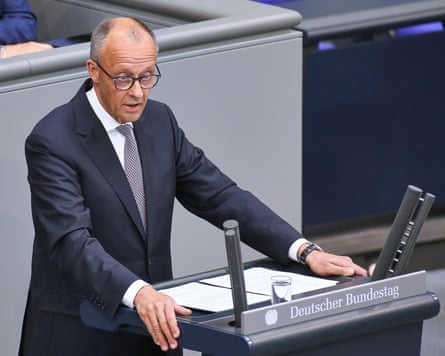

Exposed as divided and marginalised during the Iran crisis, European nations are scrambling to retrieve a place at the Middle East negotiating table, fearing an impulsive Donald Trump has diminishing interest in stabilising Iran or the wider region now he believes he has achieved his key objective of wiping out Tehran’s nuclear programme.
On Tuesday the EU’s top diplomat, Kaja Kallas, was the latest senior European figure to phone the Iranian foreign minister, Abbas Araghchi, offering to be a facilitator and urging Tehran not to leave the crisis in a dangerous limbo by keeping UN weapons inspectors out of Iran.
The French president, Emmanuel Macron, has even broken a three-year silence to speak to Vladimir Putin about the risk of nuclear proliferation in the Middle East, including how a deal could be struck between Iran and the US on a restricted civil nuclear programme. Macron has been involved in Iranian diplomacy for a decade and came close to engineering a rapprochement between Trump and the then Iranian president, Hassan Rouhani, at the UN general assembly in 2018.
But Iran, faced with what it regards as craven European support for Israeli and American airstrikes that killed more than 930 people and injured as many as 5,000, is not placing much faith in the continent’s ability to influence the White House.
Damage to Evin prison in Iran after an Israeli strike.Photograph: Abedin Taherkenareh/EPA
For Europe, this signals a slow slide into irrelevance. The three major European powers known as the E3 – France, Germany and the UK – were once key fixtures in Iran’s diplomacy and played a central role in brokering the Iran nuclear deal , which they signed alongside the EU, the US, China, Russia and Iran in 2015.
Europe had little input in the US’s recent negotiating strategy with Iran, led by Trump’s special envoy to the Middle East, Steve Witkoff, and was given just over an hour’s official warning before the Israeli and US attacks. The one meeting that the E3 foreign minsters held during the crisis with Iranian diplomats in Geneva on 20 June proved a failure and was followed by the US strikes on Iran’s nuclear facilities. France claimed it helped Israel repel Iranian drones.
Trump crowed afterwards that “Iran doesn’t want to speak to Europe. They want to speak to us. Europe is not going to be able to help in this one.”
From the Iranian perspective, Europe has long been a disappointing negotiating partner, repeatedly failing to show any independence from the US. When Trump withdrew the US from the nuclear deal in 2018, the E3 condemned the move in a joint statement issued by its then-leaders, Angela Merkel, Theresa May and Macron. But it did nothing effective to pursue an independent strategy to lift European sanctions on Iran as it had promised. The fear that European firms trading with Iran would be put under US sanctions was too great.
Emmanuel Macron, Theresa May and Angela Merkel in 2018 condemned the US withdrawal from the Iranian nuclear deal.Photograph: Vassil Donev/EPA
The view from Tehran, it was felt, was that Europe’s timidity left it with no choice but to follow the policy of nuclear brinkmanship, including gradually increasing its stockpile of enriched uranium.
At the start of Trump’s second term, the E3 plus Kallas tried again to insert themselves into the process by holding three low-key meetings with Iranian negotiators. But Araghchi was always angling to speak to Washington, telling the Guardian of his discussions with the Europeans: “Perhaps we are talking to the wrong people.” After Trump indicated he was willing to speak to Iran bilaterally and showed some flexibility about Tehran’s right to enrich uranium, Iran cast Europe aside.
Iran believes Europe played a role either through naivety or complicity in opening the door for the Israeli attack by tabling a motion of censure at the board of the UN nuclear inspectorate, the International Atomic Energy Agency.
Such motions have been passed before at the IAEA and usually led to Iran retaliating by increasing its stocks of enriched uranium. But the 12 June motion was different – for the first time in 20 years the board found Iran in breach of its obligations under the nuclear non-proliferation treaty.
Europe had to take that step to use its right as a signatory to the 2015 deal to reimpose sanctions on Iran before expiry of the deal on 15 October. Because of the way the deal was negotiated, neither Russia nor China can veto Europe reimposing sanctions. America is no longer party to the deal so this power to reintroduce UN sanctions is Europe’s diplomatic re-entry point into the Iranian file.
European diplomats insist that the IAEA censure motion was necessary, and that they had no option owing to Iran’s mounting stocks of highly enriched uranium that had no possible purpose in a civilian nuclear programme. Europe also still hoped the talks between the US and Iran, mediated by Oman, would bear fruit, and had not foreseen the US giving Israel the green light to attack.
Since the Israeli strikes, European unity has frayed further. Britain has largely opted for opacity, but it was obvious from what ministers did not say that the government’s legal advice was that the Israeli attack could not be justified as an act of self-defence under the UN charter. France openly asserted that the attack was unlawful.
By contrast, Germany endorsed all that Israel has done. At the G7 summit in mid-June, the chancellor, Friedrich Merz, said: “This is the dirty work that Israel is doing, for all of us.”
Friedrich Merz, the German chancellor, told parliament that Israel was doing the ‘dirty work’ for ‘all of us’.Photograph: dts News Agency Germany/Shutterstock
Germany’s foreign minister, Johann Wadephul, told parliament that “Israel has the right to defend itself and protect its people. Let me say clearly that, if Israel and the US have now managed to set back the Iranian nuclear programme, it will make Israel and its neighbourhood more secure.”
Asked by the newspaper Die Zeit if he believed Israel’s actions were lawful, he said Germany did not have the same quality intelligence sources as the US and Israel, but he had to trust their belief that Iran was close to acquiring a nuclear weapon. “They told us that, from their perspective, this is necessary – and we must accept that.”
Such remarks have left Iranian diplomats spitting about European double standards over the sanctity of international law.
By contrast, Enrique Mora, the EU’s point person on Iran from 2015 to early 2025, has written a scathing piece in which he says Israel has killed nuclear diplomacy and Iran’s nuclear knowledge cannot be destroyed.
He wrote: “If Iran now chooses the militarisation of its nuclear capabilities, if it now decides to move toward a bomb, it will do so following a clear strategic logic: no one bombs the capital of a nuclear-armed country. June 21, 2025, may go down in history not as the day the Iranian nuclear programme was destroyed, but as the day a nuclear Iran was irreversibly born.”
There are different strategies Europe can pursue. It can, like Germany, show Iran there is no daylight between the E3 and Israel and assert that Iran can only have a civil nuclear programme that excludes domestic enrichment of uranium. It can press ahead with the reimposition of sanctions and hope that Iran buckles.
Alternatively, it can champion a compromise that Tehran can wear. In a recent statement, the European Council on Foreign Relations said “maximalist demands on Iran – including negotiating over missiles now viewed by Tehran as its main deterrence umbrella – will likely push the country to use every means still available to reach nuclear breakout. A more viable endgame would involve a return of wide-scale inspections by international monitors and an immediate, substantial roll-back of Iranian uranium enrichment. The goal should be Iran pursuing this enrichment through a regional consortium backed by the United States.” That is broadly closer to the French position.
Europe will never hold sway like Israel or the US, but it has one last chance to help create something durable, and prevent the Iranian crisis becoming a nuclear proliferation crisis for the whole region.